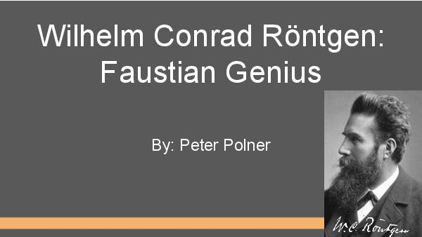
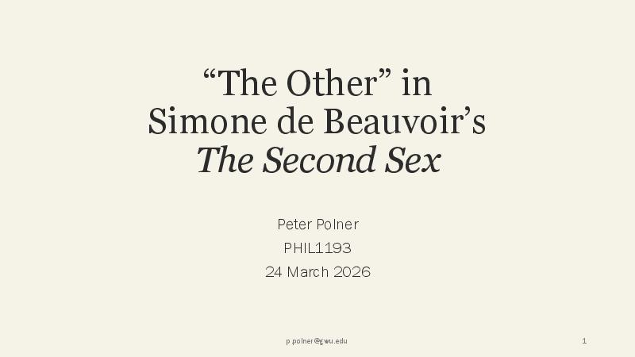
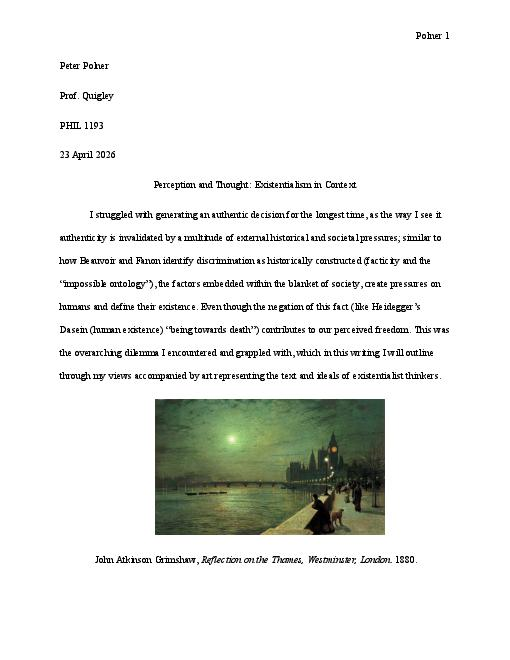
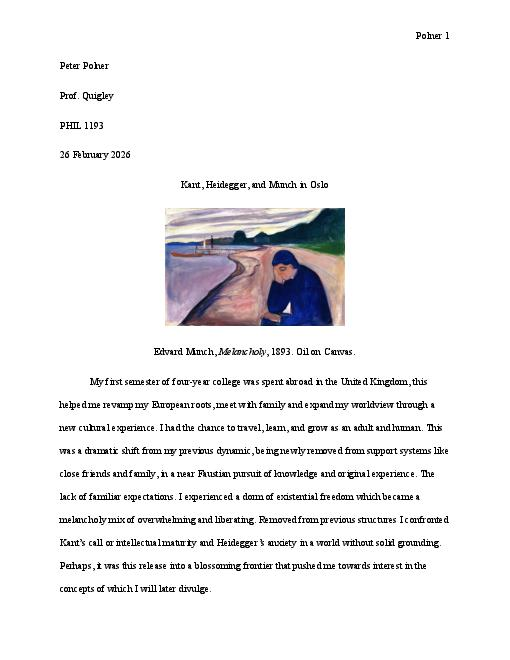

Works
Pitch decks and writing samples, organized by semester.
Fall 2026
Spring 2026
Spring 2026
GER2162 Cultural Diplomacy in the FRG and GDR
Spring 2026

GER2162 Wilhelm Röntgen: Faustian Genius Spring 2026
PHIL1193 “The Other” in Beauvoir’s The Second Sex Spring 2026
PHIL1193 Existentialism in Context Spring 2026
PHIL1193 Kant, Heidegger, and Munch in Oslo